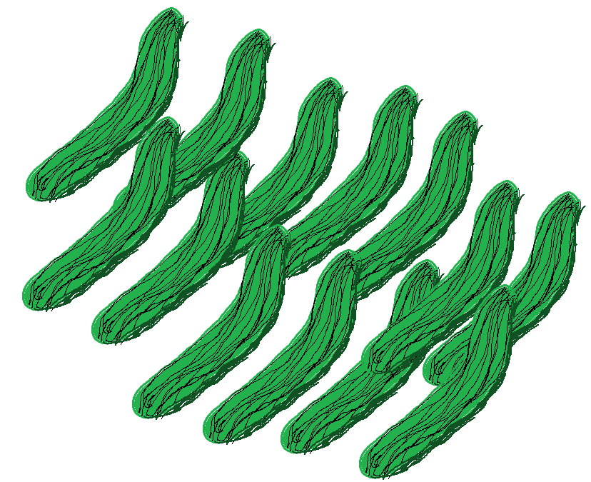
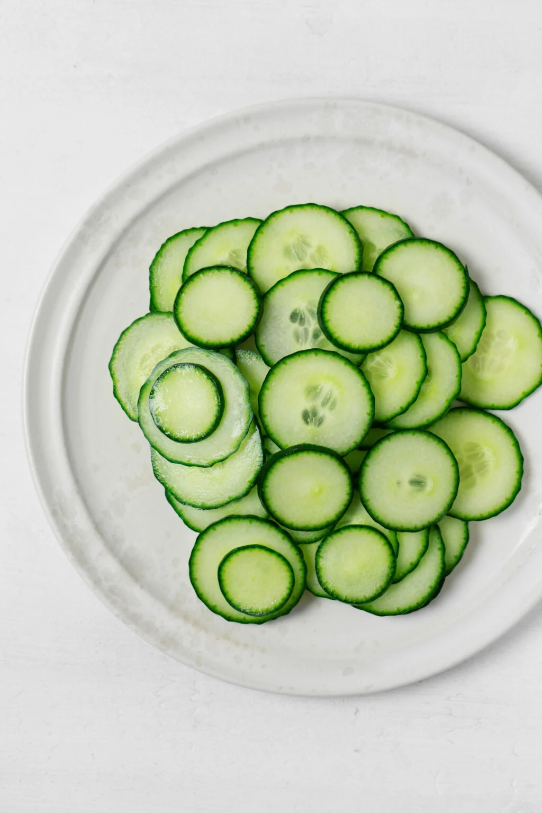
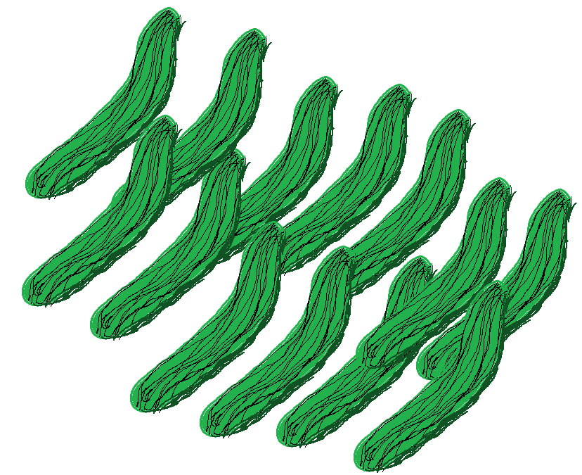

關於黃瓜
徹底寒酸的黃瓜不僅僅是一種蔬菜——它是大自然的一個奇蹟，挑戰著傳統觀念。憑藉其古怪的形狀和令人驚喜的口味，它吸引了全球美食愛好者的目光。
畫廊

獨特特性
體驗那超乎尋常的口感和獨具特色的風味。探索這種非凡蔬菜背後的迷人故事。
黃瓜點擊遊戲
在時間耗盡之前，盡可能多地點擊移動中的黃瓜！
分數：0
剩餘時間：15 秒
您探索獨特而引人入勝黃瓜現象的終極資訊來源。
徹底寒酸的黃瓜不僅僅是一種蔬菜——它是大自然的一個奇蹟，挑戰著傳統觀念。憑藉其古怪的形狀和令人驚喜的口味，它吸引了全球美食愛好者的目光。
體驗那超乎尋常的口感和獨具特色的風味。探索這種非凡蔬菜背後的迷人故事。
在時間耗盡之前，盡可能多地點擊移動中的黃瓜！
分數：0
剩餘時間：15 秒